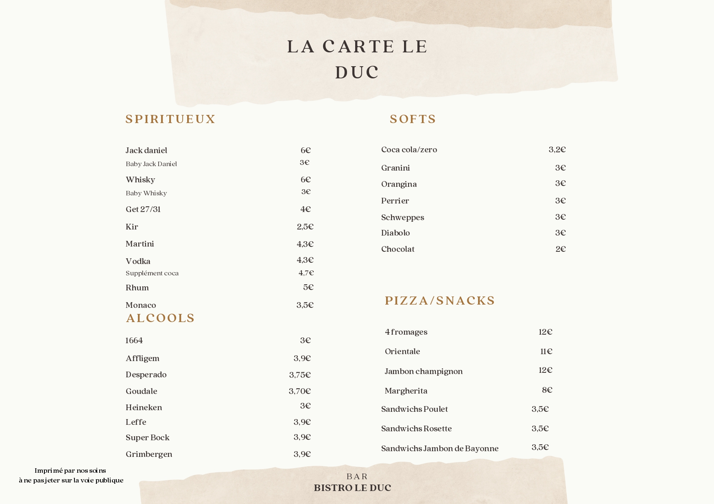

Ambiance rustique et conviviale
Le Bistro Le Duc vous accueille dans une ambiance chaleureuse et rustique, idéale pour partager un moment convivial autour d’un verre, d’un café ou d’un encas.
📍 Adresse : ZAE Val de Loing – Super U, Souppes-sur-Loing 77460
✉️ Email : bistro.duc77@gmail.com
🕒 Horaires :
Lundi au samedi : 8h30 – 20h30
Dimanche : 9h00 – 12h00

Bois, couleurs chaudes et esprit bistrot traditionnel : ici, on prend le temps, on discute, et on profite.